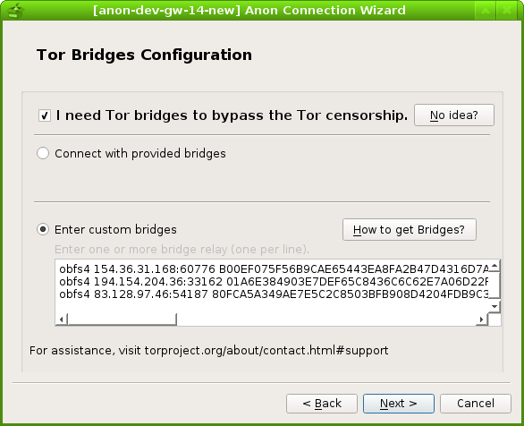
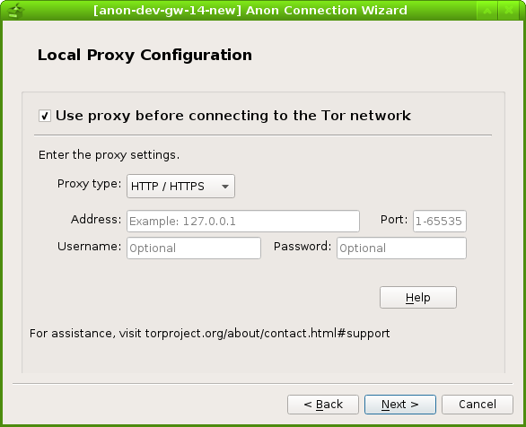
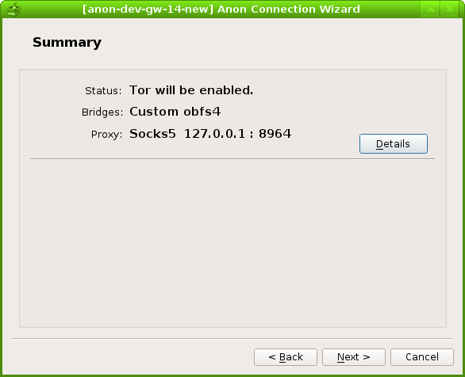

Originally published at: https://www.whonix.org/blog/anon-connection-wizard
Hello everyone! I am iry.
As some of you have noticed, I have been working on an application called anon-connection-wizard as a Google Summer of Code(GSoC) project this year.
I was under the mentor and help of the Whonix core developer @Patrick, and so many other enthusiastic developers including but are not limited to @JasonJAyalaP , joysn1980, @HulaHoop from Whonix, and Sukhbir (sukhe) from the Tor project. I would like to say thank you to everyone who has helped me from my heart. Within such a supportive community, I enjoyed the development process so much that I kept experiencing flows.
This post, presenting in a Q&A form, is an introduction to the anon-connection-wizard which will be shipped with the upcoming Whonix 14! It is also a summary of the work I have done and the tasks I will be working on.
Q: What is anon-connection-wizard?
A: anon-connection-wizard is a python-based application that help users in different Internet environment connect to the Tor network. The followings are some screenshots of it which provides you with some visual impression on it:





Q: How does anon-connection-wizard work?
A: It will firstly ask users questions about their network environment, like whether they live in censored areas. And then, it will generate a.torrc file with the most suitable Tor configurations according to the answers from users.
Q: Isn't it very similar to the Tor-launcher shipped with Tor Browser Bundle?
A: Yes, it does share several similar functions with the current Tor-launcher. I have been considering Tor-launcher as the upstream of anon-connection-wizard and trying to closely keep up and collaborate with their development.Q: Why do we need anon-connection-wizard when we have already had Tor-launcher?
A: Because these two applications have very different use cases. Currently, the implementation of Tor-launcher heavily relies on the Tor Browser(which is based on Firefox). However, a Tor user does not necessarily be a Tor Browser Bundle user. There are still a large number of people I callsystem Tor users who would like to run core Tor with different torified applications. And these people (yes, you are one of them if you use Whonix!) may prefer anon-connection-wizard because it does not rely on Tor browser and all its dependencies have already been packaged into Debian.
Q: What works have you done during the summer?
A: anon-connection-wizard was originally developed by @troubadour as part of the Whonix Project. Some of the screenshots of its old version can be found in this Whonix blog post. In March, I completed the basic function and ported it from Python2 to Python3, from PyQt4 to PyQt5. During the summer, I made a huge amount of improvement and changes, which include:- Completely redesign anon-connection-wizard UI basing on Linda's PET paper and Tor UX team's proposal to new Tor-launcher.
- Add a torrc page in anon-connection-wizard that allows users have an overview before connecting to the Tor network
- Add serveral help buttons with detailed instructions to help users make decision
- User input validation check
- Let anon-connection-wizard remember user's last time settings
- Create a torrc_repair script that tries to fix corrupted .torrc files
- Improve and add features to the tor_status.py
- torrc.d feature request against Debian Tor package
- Switch from overwriting .torrc approach to edit-mark approach, and then to torrc.d approach
- Shipping default Tor bridges request
- Update default provided Tor bridges
I also wrote bi-week reports to @tor-project mailing list, which have been recorded on GSoC page in Tor wiki.
Q: What is your next step on anon-connection-wizard?
A: I will still be working on my Github repository and the following features will be implemented in the near future :- implement bridges information validity check by RE or Tor ERROR complaints
- merge whonixsetup(cli) into anon-connection-wizard
- integrate whonix-setup-wizard with anon-connection-wizard
- implement bridge request via anon-connection-wizard once BridgeDB API is finished #15967
Q: What are you going to do in the future development?
A: The future goal of anon-connection-wizard is to be packaged as a generic standalone application into Debian so that it can be used by different anonymity focused distributions like Whonix and Tails. In order to achieve it, the following works need to be done:- package anon-connection-wizard as .deb
- make anon-connection-wizard translatable
- get anon-connection-wizard translated into different languages
- after doing all the steps above, check if it can be helpful for Tails
Any way, I also see potential for future collaboration between Whonix and Tails for extending the usefulness of anon-connection-wizard beyond what Tor Launcher (and its replacement) offers [2]; anon-connection-wizard targets the OS, not just a single application, so it could integrate the choices of network configuration (wired? which wireless network? MAC spoofing?) and Tor configuration (proxy? pluggable transport?) in a single place which probably makes more sense for users and also allows us to more easily (optionally) save these settings so they are restored the next time you visit the same network. This could potentially even be used to help giving users control over entry node selection to avoid persistent Entry Guards from leaking information about you geographical movement. [3]
Q: Can I get involved into the development of anon-connection-wizard, too?
A: Absolutely! Please let me say thank you for your interest in anon-connection-wizard! I was trying to keep most of my development communication public so that people like you can have a clear idea on how all the developing decisions have been made and how we have been communicating and cooperating with each other. Most of the discussions happened in these two places and a simple "hi, I think maybe I can help with..." is just enough to join us:- [graphical gui] Whonix Setup Wizard / Anon Connection Wizard - Technical Discussion
- review and merge anon-connection-wizard pull request by iry
Q: What other work have you done during the summer?
A: Like what I said in my GSoC proposal:I never consider my project as a one-time project. Instead, I consider it as an important step to help myself get more involved in the Tor/Whonix community.I was trying to jump into and follow up many different parts of the Tor and Whonix community. For those who may be interested, here are some links: